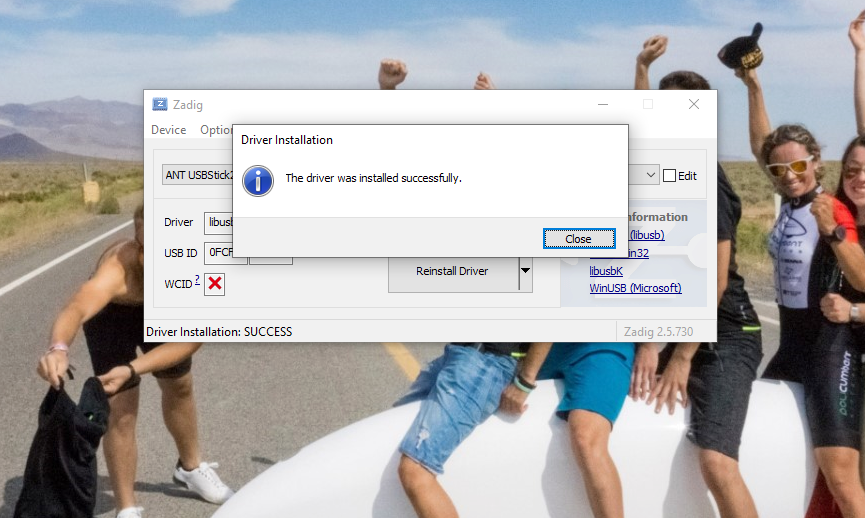

Windows Driver - Policumbent Simulator
-
Download Zadig from here
-
Open Zadig
-
Click on Options and then check List All Devices
-
Select ANT USBStick2
-
Select libusb-win32 (v1.2.6.0)
-
Click on Replace Driver or on Downgrade driver
-
Wait, the process can last up to 5 minutes
-
Close Zadig and open WHPSC Simulator App
